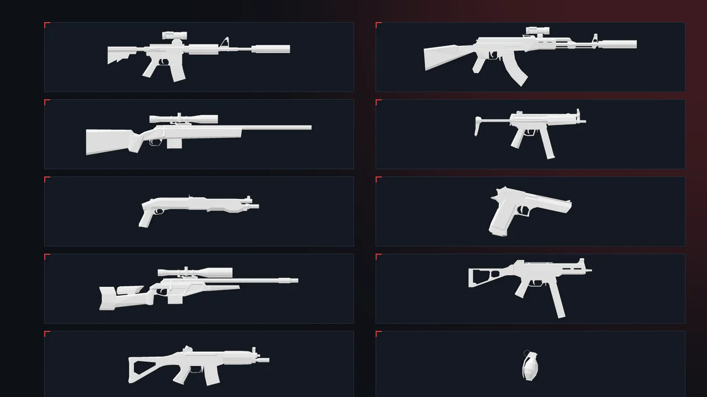

Een nieuwe look, van laadscherm tot kill feed
Laadschermen die de map uitleggen, een tactische kaart, een podium na de match, een fotomodus, HDR-uitvoer, duidelijke foutschermen en een launcher die je met een controller bedient. Dit komt eraan, en zo is het gebouwd.
De volgende update verandert hoe TrueCombat: Platinum eruitziet en aanvoelt, bijna overal waar je komt. Aan de rondes zelf verandert niets. Alles draait om meer zien, sneller begrijpen en minder tijd verliezen in menu's.

In de match
Wapeniconen in de kill feed. De kill feed toont nu dader, wapen en slachtoffer, met een strak silhouet van het wapen in plaats van de naam. De iconen komen rechtstreeks uit de wapenmodellen van de game, allemaal op dezelfde schaal, dus een pistool oogt als een pistool naast een geweer.
Je echte toetsen op het scherm. Elke hint, tip en stemregel toont de toets die jij echt hebt ingesteld, als toetskap. Zet Gebruiken op E en de hint zegt E.
Een tactische kaart. Houd M ingedrukt voor een bovenaanzicht van de map met beide bomsites, de vlaggen, de gebiedsnamen en de posities van je eigen team. Vijanden zie je nooit. Serverbeheerders kunnen de kaart uitzetten, bijvoorbeeld voor competitief spel.
Een podium na de match. Terwijl de mapstemming openstaat, staan de beste drie op een podium met hun score en kills.
Wat is er nieuw, één keer. Na een update toont een korte kaart de wijzigingen, de eerste keer dat je een map laadt. Typ whatsnew in de console om ze opnieuw te zien.
Voor en na de match
Laadschermen die de map uitleggen. Elke map laadt nu over een eigen achtergrond, met het bovenaanzicht, de setting, het tijdstip en een regel over hoe de map speelt.
Foutschermen die helpen. "Server vol", "verkeerde versie", "bestanden ontbreken", "je bent gekickt" en een falende grafische driver krijgen elk een heldere uitleg en een knop die het oplost: een andere server zoeken, opnieuw verbinden, downloads toestaan, afsluiten om bij te werken of overschakelen op OpenGL. De oorspronkelijke melding staat eronder voor wie ze wil lezen.
Voor wie graag screenshots maakt
Fotomodus. In een lokale game, een demo of als volledige toeschouwer typ je photomode voor een vrije camera zonder HUD. Bewegen, kantelen, beeldhoek aanpassen, door zes kleurgradaties bladeren, een demo stilzetten en de foto nemen. Met camerapaden zet je sleutelpunten en vlieg je er vloeiend tussen.
HDR-uitvoer. Op een HDR-scherm met Windows HDR aan kan DirectX 12 nu echte HDR10 uitsturen. Papierwit en piekhelderheid stel je in op de pagina Graphics. Op een gewoon scherm verandert er niets.
Een kleurgradatie per map. Elke map krijgt op de preset Ultra een eigen, subtiele kleurgradatie, zodat sneeuw koud oogt en het rangeerterrein zijn warme avondlicht houdt.
Zie wat een instelling kost. De pagina Graphics meet nu je frametijd voor en na elke wijziging en toont het verschil in milliseconden, en met een voorbeeldknop wordt de pagina doorzichtig zodat je de wijziging live op de match erachter ziet.
De launcher
De pagina Spelen van de launcher kan achter het menu een korte, stille clip van elke map tonen, opgenomen in de engine zelf. Rechtsklik op het pictogram in het systeemvak voor een snel paneel met de versie, spelers online, Snel spelen en oefenen. En de hele launcher werkt nu met een controller: de D-pad beweegt, A kiest, B gaat terug, de bumpers wisselen van pagina en Start speelt.
Overal dezelfde stijl
De website, de launcher, de menu's en de HUD in de game, de staftools en de Discord-bot halen hun kleuren en lettertypes nu uit één gedeeld ontwerpbestand, zodat ze niet meer uit elkaar kunnen groeien. De website gebruikt al één iconenset, en de 3D-mapviewer en de releasepagina's gingen eerder vandaag live.
Wat nog openstaat
Dit wordt getest voor de volgende update, samen met het nieuwe menuontwerp. HDR-uitvoer moet nog op meer schermen getest worden, en de mapclips voor de launcher en het hoofdmenu nemen we op met de releasebuild zelf. Ziet een laadscherm, foutscherm of icoon er voor jou niet goed uit, laat het ons weten op Discord.
Was dit artikel de moeite waard?
Anoniem. Geen account, geen cookies.
Vragen over dit artikel? Stel ze aan het team op Discord.